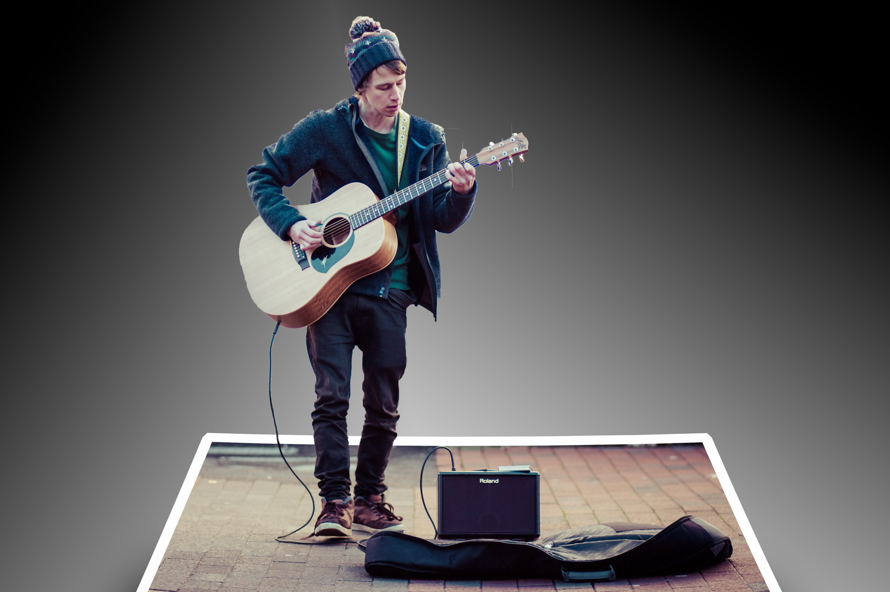
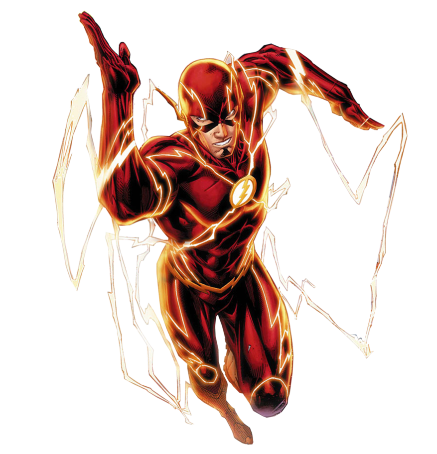

Откажитесь от неправильного хвата
Я самоучка и учился играть на гитаре самостоятельно, без чьей-либо помощи, а зря. В результате того, что некому было мне подсказать и проконтролировать то, как я выполняю некоторые приёмы игры на гитаре, у меня появилось много "нехороших привычек" относительно техники игры, от которых теперь очень трудно избавиться. Поэтому я призываю начинать обучение используя правильные методики, чтобы потом не пришлось долго и мучительно переучиваться. На момент моего обучения У меня не было в арсенале таких удивительных приложений для гитары, которые помогают начинающему гитаристу на начальном этапе. Общая проблема начинающих гитаристов - это нетерпение.

Играйте на гитаре стоя и сидя
Тут важно понимать, что играть на гитаре сидя и играть на гитаре стоя это две большие разницы(как говорят в Одессе). Думаю практически любой гитарист своей целью подразумевает выступление перед публикой и как правило это происходит в положении стоя. Поэтому об этом нужно позаботиться заранее и обязательно включать в свои репетиции отработку материала что называется "в боевых условиях", то есть стоя, желательно даже шмотки соответствующие нацепить)) На стуле вы будете горбиться и пытаться увидеть, что делают ваши руки (еще одна плохая привычка, от которой надо избавляться). Затем, когда вы встаете, все меняется. Попробуйте, и вы поймете, что я имею в виду. Вам уже будет сложнее увидеть левую руку, но видеть её совсем не обязательно. Убедитесь, что у вас хороший удобный гитарный ремень, отрегулируйте его на удобную длину (забудьте о том, что гитару можно опустить до колен — выглядит круто, но это только дешёвые понты и к технике игры не имеют никакого отношения) и регулярно тренируйтесь играть, пока вы стоите.
Не надо гнаться за скоростью
Даже не пытайтесь научиться играть быстро)) Серьёзно, не делайте этого. Хорошая техника заключается в точной аппликатуре и попадании в правильные ноты каждый раз, особенно когда дело доходит до гамм и сложных аккордов. Сосредоточьтесь на точной аппликатуре. Правда в том, что при таком подходе к обучению играть правильно и быстро вы станете сами собой. Самым большим препятствием для быстрой игры является плохая техника. Никогда не торопитесь и играйте медленно. Используйте специальный софт, существует много бесплатных приложений, которые слушают как вы играете на гитаре и поправляют вас, если вы играете неправильно.

Всегда используйте правильную постановку пальцев
Человечество играет на гитаре уже очень давно и за это время опытным путём было определено оптимальное положение пальцев на грифе гитары для взятия нот и аккордов. Настоятельно рекомендую вам взять на вооружение проверенные временем гитарные постулаты. Иногда вы можете обнаружить более простой способ сыграть тот или иной музыкальный фрагмент — скорее всего вы музыкальный гений, но просто не знали этого. Не поддавайтесь искушению. Правильная аппликатура - это не просто воспроизведение аккорда или гаммы. Ведь если добавить такой гамме или аккорду немного разнообразия, то вы с грустью обнаружите, что взять такой аккорд или сыграть такую гамму не представляется возможным, пальцев уже не хватает(да, это одна из вещей, которые я узнал на своём трудном гитарном пути). Внимательно следите за правильным расположением пальцев при взятии аккорда и исполнением гаммы.
Занимайтесь в тишине
Пришло время оттачивать гаммы, а вам хочется посмотреть телевизор? Да нет проблем, многого можно достичь, удерживая одной рукой гитару, а другой щёлкая пультом от телевизора. Это разумеется шутка) Репетировать нужно в полной тишине, чтобы ничто вас не отвлекало и вы могли сосредоточиться. В общем полное погружение.
Не избегайте сложных аккордов
Несколько недель назад в моей студии я записывал своего друга, вокалиста-гитариста, который готов был на всё, чтобы не играть аккорд Си-минор. Он посчитал аппликатуру слишком сложной, использовала каподастр и всевозможные транспозиции, лишь бы только увильнуть от ужасного аккорда с баррэ. Но вы не должны так поступать, напротив, вы должны искать эти сложные аккорды и уделять им больше времени и энергии. О каком профессионализме может идти речь, если вас пугает какое-то баррэ? Короче, это даже не обсуждается. Отныне наш девиз: "Чем труднее - тем лучше!".
Занимайтесь регулярно
Практиковаться на гитаре нужно на регулярной основе. Хотя бы 10 минут в день нужно уделять занятиям, не взирая ни на какую занятость. Одна из составляющих хорошей техники игры на гитаре это мышечная память, а чтобы мышечная память появилась и оставалась на необходимом уровне, её нужно поддерживать в тонусе.".